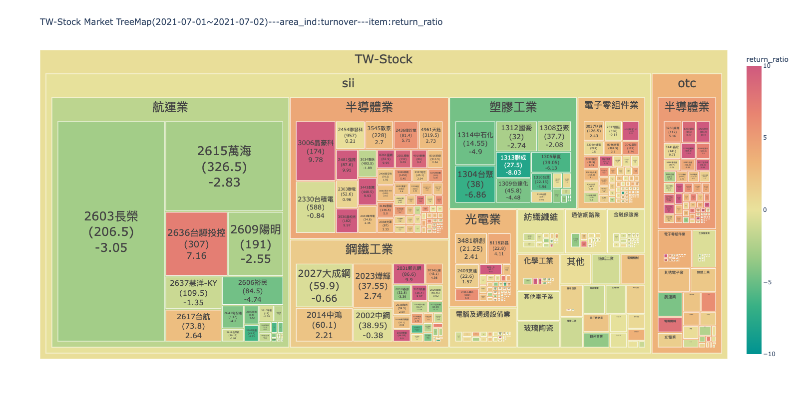
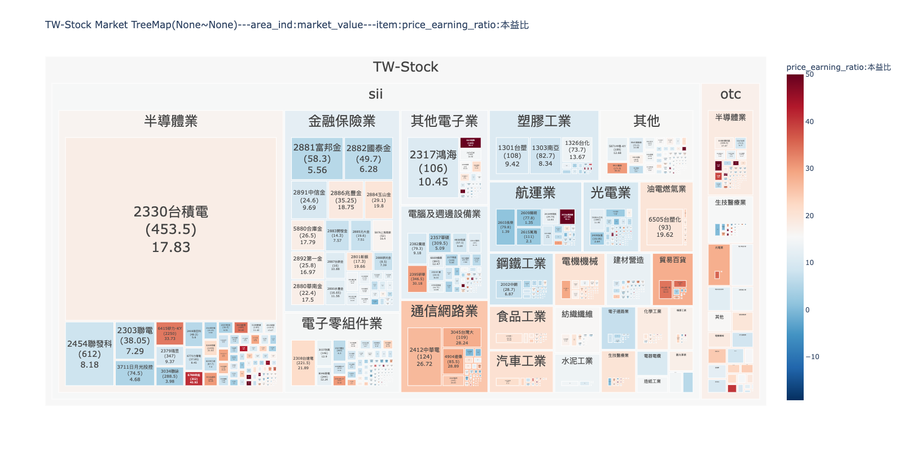
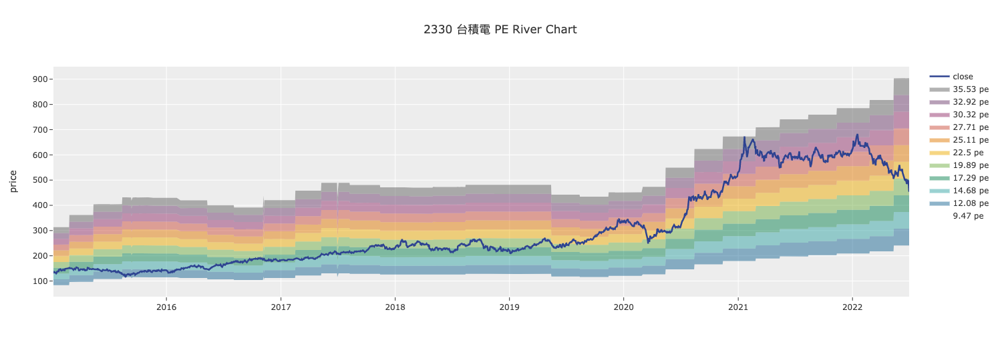
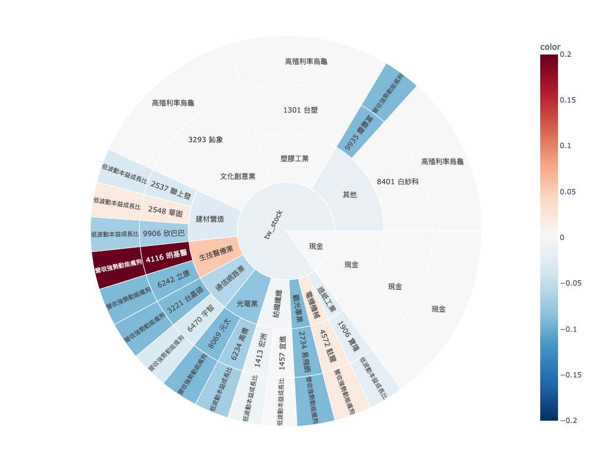
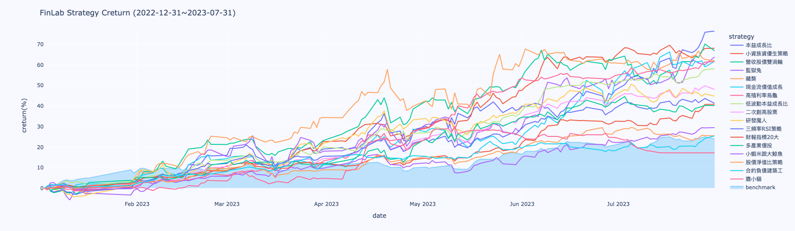

finlab.plot
資料視覺化模組，提供台股市場專用的多種視覺化工具。
使用情境
- 繪製股票 K 線圖與技術指標
- 視覺化市場熱度（樹狀圖）
- 對比多檔股票財務指標（雷達圖）
- 觀察股價與估值關係（河流圖）
- 分析策略持倉分布（旭日圖）
- 展示策略績效統計
快速範例
K 線圖與技術指標
from finlab.plot import plot_tw_stock_candles
# 繪製台積電 K 線圖
plot_tw_stock_candles(
stock_id='2330',
recent_days=200
).show()
市場熱度樹狀圖
from finlab.plot import plot_tw_stock_treemap
# 視覺化 2024-01-01 的市場熱度
plot_tw_stock_treemap(
start='2024-01-01',
end='2024-01-01',
area_ind='market_value', # 方塊大小：市值
item='return_ratio' # 顏色：報酬率
).show()
財務指標雷達圖
from finlab.plot import plot_tw_stock_radar
# 對比多檔股票的財務指標
plot_tw_stock_radar(
portfolio=['2330', '2454', '2317'],
feats=[
'fundamental_features:營業毛利率',
'fundamental_features:營業利益率',
'fundamental_features:稅後淨利率'
],
mode='bar_polar'
).show()
詳細教學
參考 資料視覺化教學，了解： - 所有視覺化工具的完整範例 - 自訂圖表樣式與配色 - 互動式圖表使用技巧 - 匯出圖表為圖片
API Reference
plot_tw_stock_candles()
finlab.plot.plot_tw_stock_candles
plot_tw_stock_candles(symbol, recent_days=400, adjust_price=False, resample='D', overlay_func=None, technical_func=None)
繪製台股技術線圖圖組
Args:
symbol (str): 台股股號，ex:'2330'。
recent_days (int):取近n個交易日資料。
adjust_price (bool):是否使用還原股價計算。
resample (str): 技術指標價格週期，ex: D 代表日線, W 代表週線, M 代表月線。
overlay_func (dict):
K線圖輔助線，預設使用布林通道。
from finlab.data import indicator
overlay_func={
'ema_5':indicator('EMA',timeperiod=5),
'ema_10':indicator('EMA',timeperiod=10),
'ema_20':indicator('EMA',timeperiod=20),
'ema_60':indicator('EMA',timeperiod=60),
}
設定多組技術指標：
```py
from finlab.data import indicator
k,d = indicator('STOCH')
rsi = indicator('RSI')
technical_func = [{'K':k,'D':d},{'RSI':rsi}]
```
| RETURNS | DESCRIPTION |
|---|---|
Figure
|
技術線圖 |
Examples:
from finlab.plot import plot_tw_stock_candles
from finlab.data import indicator
overlay_func={
'ema_5':indicator('EMA',timeperiod=5),
'ema_10':indicator('EMA',timeperiod=10),
'ema_20':indicator('EMA',timeperiod=20),
'ema_60':indicator('EMA',timeperiod=60),
}
k,d = indicator('STOCH')
rsi = indicator('RSI')
technical_func = [{'K':k,'D':d},{'RSI':rsi}]
plot_tw_stock_candles(symbol='2330',recent_days=600,adjust_price=False,overlay_func=overlay_func,technical_func=technical_func)
使用範例：
from finlab.plot import plot_tw_stock_candles
from finlab.data import indicator
# 基礎用法：繪製 K 線圖
plot_tw_stock_candles('2330', recent_days=200).show()
# 加入技術指標
fig = plot_tw_stock_candles('2330', recent_days=200)
# 可以使用 fig.add_trace() 添加自訂指標
fig.show()
參數說明
- stock_id: 股票代號（字串）
- recent_days: 顯示最近 N 天的資料
- 回傳 plotly.graph_objects.Figure 物件，可進一步客製化
注意事項
- 需安裝
plotly套件：pip install plotly - K 線圖預設顯示收盤價、開盤價、最高價、最低價
- 若要在 Jupyter Notebook 顯示，需呼叫
.show()
plot_tw_stock_treemap()
finlab.plot.plot_tw_stock_treemap
plot_tw_stock_treemap(start=None, end=None, area_ind='market_value', item='return_ratio', clip=None, color_continuous_scale='Temps', treemap_data=None)
繪製台股板塊圖資料
巢狀樹狀圖可以顯示多維度資料，將依照產業分類的台股資料絢麗顯示。
| PARAMETER | DESCRIPTION |
|---|---|
start
|
資料開始日，ex:
TYPE:
|
end
|
資料結束日，ex:
TYPE:
|
area_ind
|
決定板塊面積數值的指標。
可選擇
TYPE:
|
item
|
決定板塊顏色深淺的指標。
除了可選擇依照 start 與 end 計算的
TYPE:
|
clip
|
將 item 邊界外的值分配給邊界值，防止資料上限值過大或過小，造成顏色深淺變化不明顯。 ex:(0,100)，將數值低高界線，設為 0~100，超過的數值。 Note 參考pandas文件更了解
TYPE:
|
color_continuous_scale
|
TYPE:
|
treemap_data
|
客製化資料，格式參照
TYPE:
|
Returns: (plotly.graph_objects.Figure): 樹狀板塊圖 Examples: ex1: 板塊面積顯示成交金額，顏色顯示'2021-07-01'～'2021-07-02'的報酬率變化，可以觀察市場資金集中的產業與漲跌強弱。
 ex2: 板塊面積顯示市值(股本*收盤價)，顏色顯示近期本益比，可以觀察全市場哪些是權值股？哪些產業本益比評價高？限制數值範圍在(0,50)， 將過高本益比的數值壓在50，不讓顏色變化突兀，能分出高低階層即可。 市場熱度視覺化：
from finlab.plot import plot_tw_stock_treemap
# 範例 1：視覺化單日市場報酬率
plot_tw_stock_treemap(
start='2024-01-01',
end='2024-01-01',
area_ind='market_value', # 方塊大小：市值
item='return_ratio' # 顏色：報酬率
).show()
# 範例 2：視覺化成交量
plot_tw_stock_treemap(
start='2024-01-01',
end='2024-01-01',
area_ind='turnover', # 方塊大小：成交量
item='turnover_ratio' # 顏色：成交量比率
).show()
# 範例 3：視覺化本益比分布
plot_tw_stock_treemap(
start='2024-01-01',
end='2024-01-01',
area_ind='market_value',
item='price_earning_ratio:本益比',
clip=(0, 50), # 限制本益比範圍 0-50
color_continuous_scale='RdBu_r' # 紅藍配色
).show()
常用參數組合
- 市場熱度：
area_ind='market_value',item='return_ratio' - 交易活躍度：
area_ind='turnover',item='turnover_ratio' - 估值分布：
area_ind='market_value',item='price_earning_ratio:本益比'
資料範圍限制
start和end通常設為同一天（單日快照）- 若設為不同日期，會顯示該期間的平均值
plot_tw_stock_radar()
finlab.plot.plot_tw_stock_radar
plot_tw_stock_radar(portfolio, feats=None, mode='line_polar', line_polar_fill=None, period=None, cut_bins=10, title=None, custom_data=None)
繪製台股雷達圖
比較持股組合的指標分級特性。若數值為nan，則不顯示分級。
| PARAMETER | DESCRIPTION | ||||||||||||
|---|---|---|---|---|---|---|---|---|---|---|---|---|---|
portfolio
|
持股組合，ex:
TYPE:
|
||||||||||||
feats
|
選定FinLab資料庫內的指標組成資料集。預設為18項財務指標。 ex:['fundamental_features:營業毛利率','fundamental_features:營業利益率']
TYPE:
|
||||||||||||
mode
|
雷達圖模式 ，ex:'bar_polar','scatter_polar','line_polar'`。 Note 參考不同模式的差異
TYPE:
|
||||||||||||
line_polar_fill
|
將區域設置為用純色填充 。ex:
TYPE:
|
||||||||||||
period
|
選擇第幾期的特徵資料，預設為近一季。 ex: 設定數值為'2020-Q2，取得2020年第二季資料比較。
TYPE:
|
||||||||||||
cut_bins
|
特徵分級級距。
TYPE:
|
||||||||||||
title
|
圖片標題名稱。
TYPE:
|
||||||||||||
custom_data
|
客製化指標分級，欄名為特徵 格式範例:
TYPE:
|
Returns: (plotly.graph_objects.Figure): 雷達圖 Examples: ex1:比較持股組合累計分數，看持股組合偏重哪像特徵。
from finlab.plot import plot_tw_stock_radar
plot_tw_stock_radar(portfolio=["1101", "2330", "8942", "6263"], mode="bar_polar", line_polar_fill='None')
from finlab.plot import plot_tw_stock_radar
feats = ['fundamental_features:營業毛利率', 'fundamental_features:營業利益率', 'fundamental_features:稅後淨利率',
'fundamental_features:現金流量比率', 'fundamental_features:負債比率']
plot_tw_stock_radar(portfolio=["9939"], feats=feats, mode="line_polar", line_polar_fill='toself', cut_bins=8)
多股票財務指標對比：
from finlab.plot import plot_tw_stock_radar
# 範例 1：對比三檔半導體股的獲利能力
plot_tw_stock_radar(
portfolio=['2330', '2454', '2317'],
feats=[
'fundamental_features:營業毛利率',
'fundamental_features:營業利益率',
'fundamental_features:稅後淨利率',
'fundamental_features:股東權益報酬率'
],
mode='bar_polar' # 柱狀雷達圖
).show()
# 範例 2：分析單一股票的多維度指標
plot_tw_stock_radar(
portfolio=['9939'],
feats=[
'fundamental_features:營業毛利率',
'fundamental_features:營業利益率',
'fundamental_features:稅後淨利率',
'fundamental_features:現金流量比率',
'fundamental_features:負債比率'
],
mode='line_polar', # 線狀雷達圖
cut_bins=8 # 將指標值切分為 8 個等級
).show()
mode 參數選擇
- 'bar_polar': 柱狀雷達圖（推薦用於 2-5 檔股票對比）
- 'line_polar': 線狀雷達圖（適合單一股票多指標展示）
- 'scatter_polar': 散點雷達圖（適合查看原始數據點）
plot_tw_stock_river()
finlab.plot.plot_tw_stock_river
繪製台股河流圖
使用 PE or PB 的最高與最低值繪製河流圖，判斷指標所處位階。
| PARAMETER | DESCRIPTION |
|---|---|
symbol
|
台股股號，ex:
TYPE:
|
start
|
資料開始日，ex:
TYPE:
|
end
|
資料結束日，ex:
TYPE:
|
mode
|
TYPE:
|
split_range
|
河流階層數。
TYPE:
|
Returns: (plotly.graph_objects.Figure): 河流圖 Examples:
股價與估值關係視覺化：
from finlab.plot import plot_tw_stock_river
# 範例 1：觀察台積電的本益比河流圖
plot_tw_stock_river(
stock_id='2330',
start='2015-01-01',
end='2024-01-01',
mode='pe', # 本益比模式
split_range=10 # 將本益比分為 10 個區間
).show()
# 範例 2：觀察股價淨值比河流圖
plot_tw_stock_river(
stock_id='2330',
start='2015-01-01',
end='2024-01-01',
mode='pb', # 股價淨值比模式
split_range=8
).show()
mode 參數說明
- 'pe': 本益比河流圖（Price-to-Earnings Ratio）
- 'pb': 股價淨值比河流圖（Price-to-Book Ratio）
split_range越大，顏色分級越細
資料需求
- 需要足夠長的歷史資料（建議至少 2 年）
- 財報資料有延遲，最新一季可能無數據
create_treemap_data()
finlab.plot.create_treemap_data
產生台股板塊圖資料
產生繪製樹狀圖所用的資料，可再外加FinLab資料庫以外的指標製作客製化DataFrame，
並傳入plot_tw_stock_treemap(treemap_data=treemap_data)。
| PARAMETER | DESCRIPTION |
|---|---|
start
|
資料開始日，ex:
TYPE:
|
end
|
資料結束日，ex:
TYPE:
|
item
|
決定板塊顏色深淺的指標。
除了可選擇依照 start 與 end 計算的
TYPE:
|
clip
|
將item邊界外的值分配給邊界值，防止資料上限值過大或過小，造成顏色深淺變化不明顯。 ex:(0,100)，將數值低高界線，設為0~100，超過的數值。 Note 參考pandas文件更了解
TYPE:
|
| RETURNS | DESCRIPTION |
|---|---|
DataFrame
|
台股個股指標 |
Examples:
欲下載所有上市上櫃之價量歷史資料與產業分類，只需執行此函式:
``` py
from finlab.plot import create_treemap_data
create_treemap_data(start= '2021-07-01',end = '2021-07-02')
```
| stock_id | close |turnover|category|market|market_value|return_ratio|country|
|:-----------|-------:|-------:|-------:|-------:|-------:|-------:|-------:|
| 1101 | 20 | 57.85 | 水泥工業 | sii | 111 | 0.1 | TW-Stock|
| 1102 | 20 | 58.1 | 水泥工業 | sii | 111 | -0.1 | TW-Stock|
產生樹狀圖資料（進階用法）：
from finlab.plot import create_treemap_data
# 自訂樹狀圖資料
data = create_treemap_data(
start='2024-01-01',
end='2024-01-01',
area_ind='market_value',
item='return_ratio'
)
# 可進一步處理資料或使用其他繪圖工具
print(data.head())
StrategySunburst
finlab.plot.StrategySunburst
繪製策略部位旭日圖
監控多策略。
get_strategy_df
獲取策略部位與分配權重後計算的資料
| PARAMETER | DESCRIPTION |
|---|---|
select_strategy
|
選擇策略名稱並設定權重，預設是抓取權策略並平分資金比例到各策略。
ex:
TYPE:
|
Returns: (pd.DataFrame): strategies data
plot
繪圖
| PARAMETER | DESCRIPTION |
|---|---|
select_strategy
|
選擇策略名稱並設定權重，預設是抓取權策略並平分資金比例到各策略。
ex:
TYPE:
|
path
|
旭日圖由裡到外的顯示路徑，預設為
TYPE:
|
color_continuous_scale
|
TYPE:
|
| RETURNS | DESCRIPTION |
|---|---|
Figure
|
策略部位旭日圖 |
Examples:
from finlab.plot import StrategySunburst
# 實例化物件
strategies = StrategySunburst()
strategies.plot().show()
strategies.plot(select_strategy={'高殖利率烏龜':0.4,'營收強勢動能瘋狗':0.25,'低波動本益成長比':0.2,'現金':0.15},path = ['market', 'category','stock_id','s_name']).show()
ex2:部位被哪些策略選到，標的若被不同策略選到，可能有獨特之處喔！ 
策略持倉旭日圖（需搭配雲端策略）：
from finlab.plot import StrategySunburst
# 實例化並繪製策略持倉分布
strategies = StrategySunburst()
strategies.plot().show()
使用前提
- 需要有已上傳至 FinLab 雲端的策略
- 需登入 FinLab 帳號（
finlab.login()） - 顯示各策略持倉在產業類別的分布
StrategyReturnStats
finlab.plot.StrategyReturnStats
繪製策略報酬率統計比較圖
監控策略群體相對對標指數的表現。
| PARAMETER | DESCRIPTION |
|---|---|
start_date
|
報酬率計算開始日
TYPE:
|
end_date
|
報酬率計算結束日
TYPE:
|
strategy_names
|
用戶本人的策略集設定，填入欲納入統計的策略名稱，只限定自己的策略。ex:
TYPE:
|
benchmark_return
|
策略比對基準序列，預設為台股加權報酬指數。
TYPE:
|
Examples:
統計2022-12-31~2023-07-31的報酬率數據
``` py
# 回測起始時間
start_date = '2022-12-31'
end_date = '2023-07-31'
# 選定策略範圍
strategy_names = ['膽小貓','三頻率RSI策略', '二次創高股票', '低波動本益成長比', '合約負債建築工', '多產業價投', '小蝦米跟大鯨魚', '小資族資優生策略', '本益成長比', '營收股價雙渦輪', '現金流價值成長', '研發魔人', '股價淨值比策略', '藏獒', '高殖利率烏龜','監獄兔', '財報指標20大']
report = StrategyReturnStats(start_date ,end_date, strategy_names)
# 繪製策略報酬率近期報酬率長條圖
report.plot_strategy_last_return().show()
# 繪製策略累積報酬率時間序列
report.plot_strategy_creturn().show()
```
plot_strategy_creturn
繪製策略累積報酬率時間序列 Returns: (plotly.graph_objects.Figure): 圖表物件 
策略績效統計圖表（需搭配雲端策略）：
from finlab.plot import StrategyReturnStats
# 實例化並繪製策略績效
stats = StrategyReturnStats()
stats.plot().show()
使用前提
- 需要有已上傳至 FinLab 雲端的策略
- 需登入 FinLab 帳號（
finlab.login()） - 顯示各策略的年化報酬、夏普率等統計指標
常見問題
Q: 圖表無法顯示怎麼辦？
# 原因 1：忘記呼叫 .show()
fig = plot_tw_stock_candles('2330')
# ❌ 沒有顯示
fig = plot_tw_stock_candles('2330')
fig.show() # ✅ 正確
# 原因 2：缺少 plotly 套件
# 解決：pip install plotly
# 原因 3：Jupyter Notebook 環境問題
# 在 notebook 開頭加入：
import plotly.io as pio
pio.renderers.default = 'notebook'
Q: 如何匯出圖表為圖片？
fig = plot_tw_stock_candles('2330', recent_days=200)
# 匯出為 PNG
fig.write_image('chart.png', width=1200, height=800)
# 匯出為 HTML（可互動）
fig.write_html('chart.html')
# 注意：匯出 PNG 需安裝 kaleido
# pip install kaleido
Q: 如何客製化圖表樣式？
fig = plot_tw_stock_candles('2330', recent_days=200)
# 修改標題
fig.update_layout(title='台積電股價走勢')
# 修改顏色主題
fig.update_layout(template='plotly_dark') # 深色主題
# 調整圖表大小
fig.update_layout(width=1200, height=600)
fig.show()
Q: 樹狀圖的 item 可以使用哪些欄位？
# 所有 data.get() 可取得的欄位都可以使用
# 常用欄位：
# - 'return_ratio' - 報酬率
# - 'turnover_ratio' - 成交量比率
# - 'price_earning_ratio:本益比' - 本益比
# - 'price_earning_ratio:股價淨值比' - 股價淨值比
# - 'fundamental_features:營業毛利率' - 營業毛利率
# 查詢可用欄位
from finlab import data
data.search('fundamental') # 搜尋基本面欄位
Q: 雷達圖顯示數值差異很大怎麼辦？
# 使用 cut_bins 參數將數值標準化
plot_tw_stock_radar(
portfolio=['2330', '2454'],
feats=[
'fundamental_features:營業毛利率', # 範圍 0-100
'fundamental_features:股東權益報酬率', # 範圍 0-100
'fundamental_features:負債比率' # 範圍 0-300
],
cut_bins=10 # 將所有指標切分為 10 個等級（0-10）
).show()
參考資源
- 資料視覺化完整教學 - Jupyter Notebook 互動式範例
- Plotly 官方文檔 - 進階客製化技巧
- 回測報告視覺化 - Report 物件內建的圖表